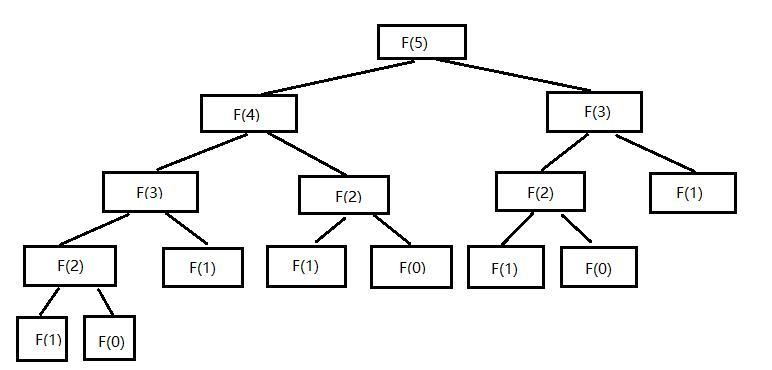

297 斐波那契数列2
- 方法栈
- 递归与栈
方法栈
在程序执行的时候，每个线程都会有一个方法栈，这个特殊的栈里所存放的是等待计算的方法或者函数，称为一个栈帧，当你执行了一个新的函数后，函数对应的参数会进栈，形成一个栈帧，当一个函数执行完成后，对应栈帧会出栈，当该栈内所有函数都执行完后，该线程也就执行结束。
递归与栈
回想一下斐波那契数列的递归调用过程，比如计算fib(5)，fib(5)会自动调用fib(4)和fib(3),fib(4)则会继续调用fib(3)和fib(2),以此类推，这样的计算过程则依赖于栈的数据结构，不仅仅是python，对于
任何语言均是如此。但栈也不是无限大的，栈的深度超出一定程度则受到语言本身的限制，因此，对于层次较深的递归通常使用迭代实现。

小结
理解方法栈的概念
理解递归与栈的依赖关系
习题
- 尝试改用迭代实现斐波那契数列
- 使用traceback模块获取python运行时的堆栈信息，看看都有什么
打赏
赠人玫瑰，手有余香。您的打赏是我们前进的动力！